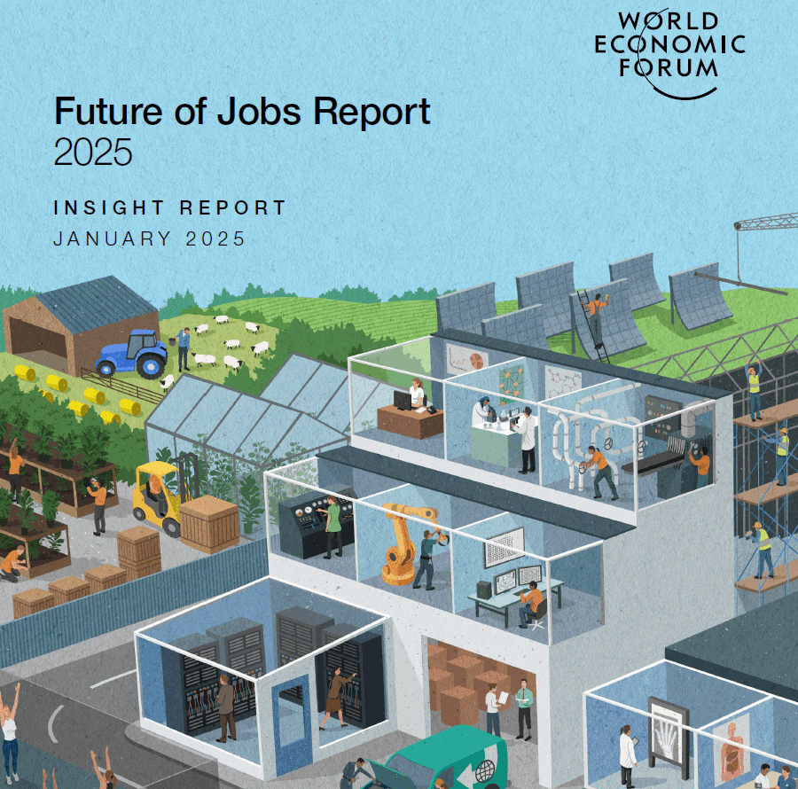

Drag & Drop Website Builder
Key Trends Shaping the Future of Work
1. Technological Transformation & AI Adoption
• Digital access expansion, Artificial Intelligence (AI), robotics, and energy technologies are the most transformative trends.
• 86% of employers expect AI and data processing technologies to impact their operations.
• GenAI (Generative AI) is driving skill demand in areas like prompt engineering and AI literacy
• Industries such as IT are leading adoption, while sectors like construction lag behind.
• Robots and autonomous systems are expected to displace 5 million jobs by 2030, especially in repetitive and manual roles.
• Generative AI is shifting job tasks and potentially expanding roles in customer service, healthcare, and creative industries.
2.Economic Uncertainty and Inflation
• Rising costs of living and inflation are ranked the second most transformative trend.
• Economic slowdown is predicted to displace 1.6 million jobs globally.
• Global GDP growth is projected at 3.2% for 2025, with inflation moderating at 3.5%.
Flexibility, creative thinking, and resilience will be essential soft skills to navigate economic shocks.
3.The Green Transition
• Climate-change mitigation and adaptation are expected to drive demand for roles such as renewable energy engineers, EV specialists, and environmental experts.
•Green hiring trends are growing with consistent demand in sectors like automotive, mining, and energy.
•Sustainability and environmental stewardship are now among the top 10 fastest-growing skills.
•Green jobs showed resilience even during the COVID-19 disruptions and are expected to grow further.
4. Demographic Shifts
• Aging populations in high-income economies increase demand for healthcare roles like nursing and personal care aides.
• Younger populations in lower-income regions will expand the labor force, requiring investment in education and skills training.
• By 2050, 59% of the global workforce will come from lower-income nations.
• Talent management, motivation, and mentoring skills are essential to leverage this demographic dividend.
5. Geopolitical Tensions and Geoeconomic Fragmentation
• One-third of companies expect geopolitical instability to impact business operations.
• Trade restrictions, subsidies, and industrial policies are increasing.
• Supply chain industries (like automotive, mining) are especially impacted.
• Demand is growing for cybersecurity, leadership, and agility skills to navigate unstable global conditions.
Global Jobs Outlook: Creation and Decline
22% of all jobs today are expected to be impacted by transformation.
By 2030:
• 170 million jobs will be created (14% of current employment).
• 92 million jobs will be lost (8% of current employment).
• Net gain: 78 million jobs, or 7%.
Top Growing Jobs by 2030:
• Big Data Specialists
• AI & Machine Learning Specialists
• Renewable Energy Engineers
• FinTech Engineers
• Delivery Drivers, Nurses, Higher Ed Teachers
• Environmental Engineers, UX/UI Designers
Top Declining Jobs:
• Data Entry Clerks
• Cashiers
• Bank Tellers
• Legal Secretaries
• Telemarketers
• Postal Clerks, Bookkeeping Staff
Promising employment opportunities are emerging within the dynamic frontline and care economy sectors. This includes devoted farmworkers who cultivate and nurture our soil, growing the crops that sustain us, as well as adept food processors who meticulously transform raw ingredients into the nourishing meals that grace our tables. Additionally, there are empathetic counselors who offer critical support and guidance to individuals in times of emotional or mental distress, playing a crucial role in community well-being. These professions are expected to witness substantial growth as society increasingly values their contributions.
Conversely, traditional clerical and secretarial positions, once seen as stable career paths, are projected to undergo a significant contraction. As automation and digital solutions continue to advance, these roles may see a dramatic decline, leading to a noteworthy reduction in the number of available jobs in this sector.
Skills Outlook: Reskilling the Global Workforce
39% of core skills will change between 2025 and 2030.
• Most in-demand skills:
• Analytical Thinking
• AI, Cybersecurity, Tech Literacy
• Resilience and Agility
• Curiosity and Lifelong Learning
• Leadership and Social Influence
59 out of 100 workers globally will need reskilling.
• 29 can be reskilled in their current jobs.
• 19 may be redeployed to new roles within the same organization.
• 11 are at high risk of redundancy.
Barriers to Workforce Transformation:
• Skill gaps (cited by 63% of employers)
• Funding and delivery of training
• Lack of internal mobility structures
Top Solutions:
• Upskilling and internal mobility
• Improved health, wellness, and DEI policies
• Government support for training and wage alignment
Workforce Strategies and Policy Priorities
• 85% of companies plan to invest in workforce reskilling.
• 64% will focus on employee health and well-being to attract talent.
• DEI efforts are increasing, with 83% of employers implementing related programs.
• In North America, DEI uptake is highest at 96%.
By 2030:
• 52% of businesses will raise wage allocations.
• 66% will hire AI-skilled talent.
• 40% may reduce headcount due to AI automation.
• 50% of employers plan to reorient their business around AI technologies.
In today’s rapidly evolving technological landscape, businesses are increasingly forging innovative partnerships with educational institutions to effectively address the growing skills gap. These collaborations are leading to the development of dynamic programs that artfully blend theoretical academic knowledge with practical, hands-on experiences in real-world settings. Such integrated approaches not only enhance the learning journey for students but also align closely with the expectations of employers seeking skilled professionals.
Among the most promising initiatives gaining traction are immersive apprenticeship programs that allow students to work alongside seasoned industry experts, intensive online bootcamps that focus on high-demand skills such as coding, data analysis, and digital marketing, and industry-recognized micro-credentials that certify specific competencies. As traditional educational frameworks often struggle to keep pace with the swift changes in job market requisites, these innovative alternatives are emerging as vital elements in creating a sustainable talent pipeline that meets employer needs.
Furthermore, government bodies are actively stepping in to support these endeavors by launching initiatives aimed at fostering public-private partnerships. These initiatives often come with financial incentives designed to enhance workforce readiness, particularly in underrepresented communities and economically disadvantaged regions. By doing so, they are igniting opportunities where they are most desperately needed, empowering a diverse group of individuals to succeed in the 21st-century job market.
According to the Future of Jobs Report 2025, we are on the brink of a significant transformation in the global labor market. This report highlights the swift rise of artificial intelligence, the increasing importance of sustainable green technologies, and substantial demographic shifts, all of which are intensifying the demand for adaptable, reskilled, and tech-savvy workers. For employers, governments, and educational institutions to remain relevant, it is crucial to establish deep, collaborative partnerships that allow workforce development strategies to evolve in alignment with the relentless advances in technology and the shifts within society.
Nations and corporations that take bold, proactive measures to cultivate human capital and promote equitable policies will undoubtedly position themselves at the vanguard of this new economic era. By doing so, they will play a pivotal role in shaping a future rich with opportunities for innovation and success.
Download The Full Report Here!
Drag & Drop Website Builder